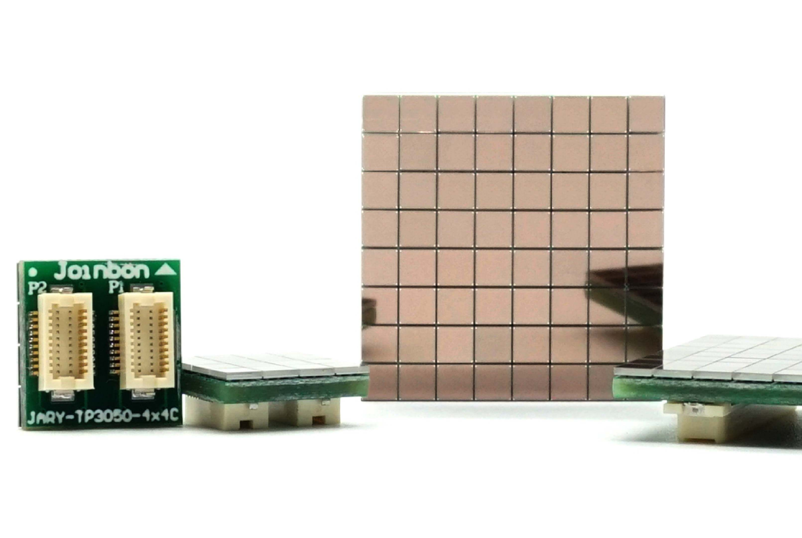

焦点新闻


鄂研鄂产鄂用 健博会上的“全球领先”产品
2024年07月10日
数字PET实验室
2024年世界大健康博览会正在武汉举行，近6000家企业参展，其中在湖北研发、生产并使用的高端医疗装备备受关注，成为全场亮点之一...

我国首台！武汉自主研发临床全数字PET销售海外
2023年09月05日
经济日报
近日，位于武汉的数字PET产业化单位锐世医疗与蒙古国第四医院正式签约，实现临床全数字PET医疗设备的首台海外销售...
前沿速递

在线监测质子治疗的“摄像头系统”升级了！
质子刀PET，作为数字PET2.0创新系统代表成果之一，一直是数字PETer在前沿探索上的努力方向。开发用于质子治疗在线监测的技术，“透视”出质子束打到哪儿、打多深、打了多少，对于充分发挥质子束布拉格峰剂量特性优势，实现肿瘤的精准质子治疗具有重要的意义。

为“光子捕手”装配“魔法芯片” 新一代标准CMOS工艺的硅光电倍增器来了！
想象一台能在完全黑暗中捕捉单颗光子的“超级相机”——这个能在极弱光环境下进行光电探测的“光子捕手”，便是硅光电倍增器。作为核医学PET/CT、粒子物理探测、激光雷达（LiDAR）、天文观测的“工业之眼”，它能捕捉微弱至极的光信号。

学术活动
国际会议
第六届新型光子探测器国际研讨会(PD24)会议
加拿大 2024.11.18
重点分享CMOS SiPM芯片技术研发及应用的最新进展
为促进应用示范和应用探索，数字PETer、博士生生劳慧赴加拿大参会，会议期间，与欧洲核子研究中心（CERN）、费米实验室、中科院高能所等多个国际顶尖团队的专家进行了交流，获得了他们对本团队技术路线的宝贵反馈和合作意向。同时，也近距离了解了国际上在粒子探测器、数字SiPM等前沿方向的最新动态，为提供了参考。